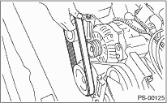
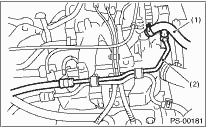
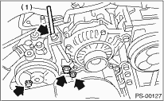
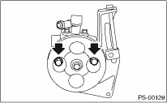
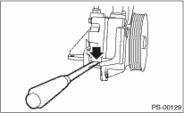

POWER ASSISTED SYSTEM (POWER STEERING) > Oil Pump
1. Disconnect the ground cable from the battery.
2. Remove the pulley belt cover.
3. Loosen the lock bolt and slider bolt and remove the power steering pump drive V-belt.

4. Disconnect the connector from power steering pump switch.
5. Disconnect pipe C and suction hose from oil pump.
CAUTION:
• Do not allow fluid from the hose end to come into contact with pulley belt.
• To prevent foreign matter from entering the hose, cover the open ends with a clean cloth.

|
(1) |
Suction hose |
|
(2) |
Pipe C |
6. Remove the installation bolt of the power steering pump bracket.

7. Place the oil pump bracket in a vise, and remove the two bolts from the front side of the oil pump.
CAUTION:
When securing the oil pump bracket in a vice, hold the oil pump bracket with the least possible force between two pieces of wood.

8. Remove the bolt from the rear side of oil pump.
9. Disassemble the oil pump and bracket by inserting a flat tip screwdriver as shown in the figure.
